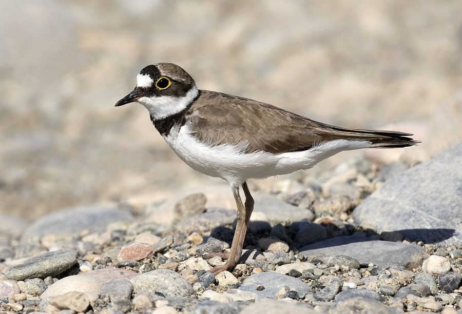

छोटा बटेरLittle Ringed Plover
Charadrius dubius · Charadriidae · BRD-0060

- Scientific name
- Charadrius dubius Scopoli, 1786
- Family
- Charadriidae
- Hindi
- छोटा बटेर
- Status here
- native
- IUCN
- LC
When to look कब देखें
Present all year.
छोटा बटेर / Little Ringed Plover
Charadrius dubius Scopoli, 1786 — Charadriidae
छोटा बटेर (लिटिल रिंग्ड प्लोवर) — पूर्वी उत्तर प्रदेश की नदियों के रेतीले किनारों, तालाबों के कीचड़दार हिस्सों और खाली पड़े खेतों में पाया जाने वाला एक छोटा, फुर्तीला और आकर्षक किनारे का पक्षी (wader) है। इसकी सबसे बड़ी पहचान इसकी आँख के चारों ओर बना चमकीला पीला गोल घेरा (yellow eye ring) और इसकी छाती पर बना एक स्पष्ट काला-सफ़ेद दोहरा पट्टा (double black-and-white breast band) है। यह ज़मीन पर कीड़ों को खोजने के लिए एक बहुत ही विशेष शैली में चलता है; यह कुछ दूरी तक तेज़ी से दौड़ता है, अचानक रुक जाता है (runs in short bursts between pauses), अपने सिर को झुकाकर कीड़े को पकड़ता है, और फिर से दौड़ने लगता है। यह घोंसला नहीं बनाता, बल्कि नदी के किनारों पर पड़े कंकड़-पत्थरों के बीच ही ज़मीन पर एक छोटा गड्ढा बनाकर (breeds on exposed river gravel) अंडे देता है, जहाँ इसके अंडों का रंग पत्थरों के साथ पूरी तरह मिल जाता है।
Quick Identification त्वरित पहचान
| Feature | Description |
|---|---|
| Size | Small, compact shorebird (15–18 cm total length); short legs and neck |
| Eye Ring | Conspicuous, bright yellow fleshy ring around the eye (key field mark) |
| Breast Band | Bold black band running across the upper breast, separated from the face by a white collar |
| Colouration | Sandy-brown upperparts; pure white forehead, throat, and all underparts |
| Foraging | Runs in quick, short dashes, stops suddenly, tilts head, and pecks at the mud |
| Bill | Short, black, stubby bill, occasionally with a tiny flesh-coloured base |
Field tip: Look on sandy banks or dry riverbeds of the Ghaghra River. Watch for a tiny sand-coloured bird running very fast across the gravel, stopping suddenly as if frozen. Its bright yellow eye ring and black breast band identify it instantly. The female resembles the male and is shown in the field tip.
Morphology आकारिकी
Biometrics (typical measurements in the northern Indian plains):
| Measurement | Range |
|---|---|
| Total length | 150–180 mm |
| Wing (flattened chord) | 105–120 mm |
| Tail | 50–65 mm |
| Tarsus | 22–27 mm |
| Bill (culmen from base) | 12–15 mm |
| Weight | 30–50 g |
Plumage: The upperparts are uniform sandy-brown. The forehead is white, bordered above by a black band running across the front of the crown. A black band (mask) runs from the bill through the eye to the ear coverts. The chin, throat, and a collar around the hindneck are white, followed by a bold black collar that encircles the upper breast. The underparts are pure white. In winter plumage, the black head and breast markings turn dark brown.
Bare parts: The bill is short, pointed, and black. The irises are dark brown, surrounded by a diagnostic bright yellow orbital ring. The legs and feet are pale yellow or pinkish-yellow.
Vocalisations
Little Ringed Plovers are vocal, especially when nesting or flying.
- Flight call: A clear, piping whistle: pee-oo or tee-oo, repeated in flight.
- Alarm call: A sharp, rapid pip-pip-pip-pip, produced when flushed from its ground nest or when predators approach.
Behaviour & Ecology व्यवहार और पारिस्थितिकी
- Run-and-pause hunting: Uses a specialized foraging technique. It runs rapidly over dry sand or mud, stops abruptly, scans, and pecks. This action disturbs surface insects, making them move and reveal their locations.
- Camouflage nesting: The nesting behavior is adapted for gravelly riverbeds. The eggs are laid in a simple scrape among river pebbles. Their cryptic coloration matches the stones perfectly, making them invisible to predators.
- Injury feigning display: If a predator approaches the nest, the parent bird will flutter away along the ground, trailing a wing and pretending to be injured ("broken-wing display") to lead the predator away from the eggs.
Life Cycle / Phenology जीवन चक्र
- Breeding season: March to June in UP, during the dry season before the monsoon floods the river gravels.
- Nesting: A shallow scrape dug in sand, gravel, or dry mud, lined with small pebbles or shell fragments.
- Nest site: Exposed sandy riverbanks or gravel islands of the Ghaghra and Rapti rivers.
- Clutch size: 3 to 4 sandy-buff eggs, heavily blotched with dark brown.
- Incubation: 22–26 days, shared by both parents.
- Fledging: The young are precocial (leave the nest immediately after drying) and forage for themselves under parental protection. They fledge in about 25–28 days.
Host Plants or Prey आहार
Primary food items:
- Insects: Small beetles, fly larvae, ants, sand crickets, and grasshoppers.
- Invertebrates: Aquatic worms, small freshwater snails, and insect nymphs gathered from wet mud.
Predators / Natural Enemies शत्रु
- Raptors: Small falcons and harriers prey on wintering plovers.
- Corvids: House Crows (Corvus splendens) systematically hunt along riverbeds for ground nests.
- Mammals: Jackals, mongoose, and stray dogs frequently consume eggs and small chicks.
- Reptiles: Bengal Monitors (Varanus bengalensis) raid nests on riverbeds.
Agricultural / Human Relevance कृषि प्रासंगिकता
Bio-indicator of riverbed health. The breeding success of the Little Ringed Plover is a key indicator of undisturbed, healthy riverine habitats.
Conservation and legal status: Protected under Schedule IV of the Wildlife Protection Act, 1972. Major threats in Basti include illegal sand mining along the Ghaghra river, destruction of nesting scrapes by free-roaming village cattle, and disturbance from riverbed cultivation (Zaid farming of melons and gourds).
Expected Locally स्थानीय रूप से अपेक्षित
Not a field record. Written from published accounts for eastern Uttar Pradesh. No confirmed local sighting yet — if you have seen it, that is what the atlas needs.
अभी तक स्थानीय पुष्टि नहीं। यह विवरण प्रकाशित स्रोतों से है, किसी अवलोकन से नहीं।
A common resident along the sandy banks of the Ghaghra and Rapti rivers in the Basti district. They can be observed year-round, with numbers increasing from November to February due to wintering birds from the north. They are also seen feeding around drying mud pools at the margins of agricultural fields.
Distribution वितरण
Global range: Widespread across Europe, North Africa, and Asia. Northern populations migrate south to tropical Africa and South/Southeast Asia.
In India: A widespread resident and winter visitor throughout the plains and coastal zones.
In Uttar Pradesh: A common resident along all major riverbeds (Ganges, Yamuna, Ghaghra, Rapti).
In Basti district / eastern UP: Regularly recorded along major river channels and sandy floodplains in all blocks.
Research Questions शोध प्रश्न
Anyone can investigate these | कोई भी इन प्रश्नों की जाँच कर सकता है
- How many seconds does a Little Ringed Plover pause between its running bursts when foraging? — Measure and record run-and-pause intervals.
- What percentage of plover nests in a stretch of the Ghaghra river are lost to trampling by livestock? / घाघरा नदी के किनारे मवेशियों द्वारा कुचले जाने के कारण छोटा बटेर के कितने प्रतिशत घोंसले नष्ट हो जाते हैं? — Map and monitor nesting sites.
- What is the minimum distance between nesting plover scrapes in a shared gravel island? — Measure nesting territory sizes.
- How effective is the "broken-wing display" of the plover in leading stray dogs away from the nest? — Record predator response sequences.
- Does the population of plovers in Basti show a preference for river sandbars over agricultural mud margins? / क्या बस्ती में छोटा बटेर की आबादी कृषि क्षेत्रों के कीचड़दार किनारों की तुलना में नदी के रेतीले किनारों को अधिक पसंद करती है? — Conduct comparative counts.
Similar Species मिलती-जुलती प्रजातियाँ
| Species | Key Difference | हिंदी |
|---|---|---|
| Kentish Plover (Charadrius alexandrinus) | Lacks the bright yellow eye ring; black breast band is broken in the center (forming shoulder patches); thinner bill | केंटिश प्लोवर — पीली आँख के घेरे का अभाव, कटी हुई छाती की पट्टी |
| Little Temminck's Stint (Calidris temminckii) | Lacks black-and-white head and breast bands; uniformly grey-brown breast; thin, longer bill | छोटा टिटहरी — छाती पर काले पट्टे का अभाव |
| Black-winged Stilt (Himantopus himantopus) | Much larger; extraordinarily long pink legs; black wings and white body; thin needle-like bill | आवाक — बहुत बड़ा आकार, लंबी गुलाबी टांगे |
Field rule: Small shorebird with sandy-brown upperparts, a prominent bright yellow eye ring, and a bold black-and-white breast band running on sandbars with quick bursts, is a Little Ringed Plover.
Taxonomy & Classification वर्गीकरण
Original description. Giovanni Antonio Scopoli described the Little Ringed Plover as Charadrius dubius in 1786 in his Deliciae Florae et Faunae Insubricae (Part 2, p. 93). The type locality was Luzon, Philippines. The genus name Charadrius is Latin for a yellowish bird mentioned in the Vulgate Bible, from the Ancient Greek kharadrios, a bird found in river clefts. The specific name dubius is Latin for doubtful or uncertain, referencing early taxonomic confusion.
Subspecies. Three subspecies are recognized globally. The resident breeding subspecies in UP and South Asia is:
| Subspecies | Authority | Range | Notes |
|---|---|---|---|
| C. d. jerdoni | (Legge, 1880) | Indian Subcontinent to Southeast Asia | UP subspecies; smaller and has a brighter yellow eye ring than the migratory Palearctic subspecies C. d. curonicus |
Family and order placement. Placed in the order Charadriiformes, family Charadriidae, subfamily Charadriinae (plovers).
Phylogenetic notes. Charadrius dubius is genetically close to the Ringed Plover (Charadrius hiaticula) and the Semipalmated Plover (Charadrius semipalmatus).
IUCN status rationale. Listed as Least Concern (LC) due to its massive global range, though local populations are threatened by sand mining and river regulation.
Photo Gallery फोटो गैलरी
References संदर्भ
- Scopoli, G. A. (1786). Deliciae Florae et Faunae Insubricae. Part 2, p. 93. Ticini. [original description]
- Ali, S. & Ripley, S. D. (1999). Handbook of the Birds of India and Pakistan. Vol. 2. Oxford University Press, New Delhi.
- Grimmett, R., Inskipp, C. & Inskipp, T. (2011). Birds of the Indian Subcontinent. 2nd ed. Christopher Helm, London.
- Hayman, P., Marchant, J. & Prater, T. (1986). Shorebirds: An Identification Guide to the Waders of the World. Christopher Helm, London.
- BirdLife International (2024). Charadrius dubius. IUCN Red List of Threatened Species. Ver. 2024.
- GBIF Occurrence Data — Charadrius dubius, Uttar Pradesh (2010–2025).
Source file: species/fauna/birds/little_ringed_plover.md